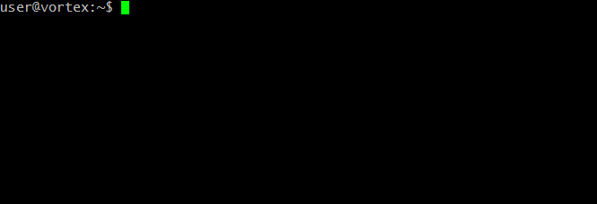
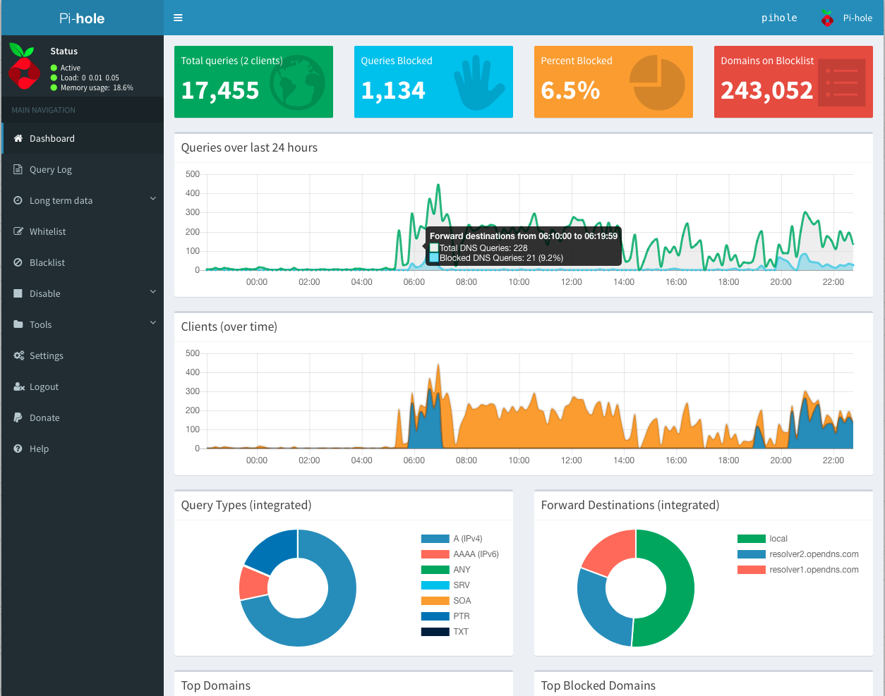

Pi-hole a black hole for Internet advertisements
For a better online experience, without advertisements and sneaky tracking codes that invade my privacy and monitor my activities, I chose to install on one of my raspberry Pi, the ad-blocker Pi-hole.
Pi Hole is a network-wide ad blocker. In a typical home environment, this can cut out almost all ads to all devices in your home, without having to install an ad blocker on every single device.
One-Step Automated Install
Those who want to get started quickly and conveniently may install Pi-hole using the following command:
curl -sSL https://install.pi-hole.net | bashPost-install: Make your network take advantage of Pi-hole
Once the installer has been run, you will need to configure your router to have DHCP clients use Pi-hole as their DNS server which ensures that all devices connecting to your network will have content blocked without any further intervention.
If your router does not support setting the DNS server, you can use Pi-hole's built-in DHCP server; just be sure to disable DHCP on your router first (if it has that feature available).
As a last resort, you can always manually set each device to use Pi-hole as their DNS server.
The Command Line Interface
The pihole command has all the functionality necessary to be able to fully administer the Pi-hole, without the need of the Web Interface. It's fast, user-friendly, and auditable by anyone with an understanding of bash.

The Web Interface Dashboard
This optional dashboard allows you to view stats, change settings, and configure your Pi-hole. It's the power of the Command Line Interface, with none of the learning curve!

Some notable features include:
- Mobile friendly interface
- Password protection
- Detailed graphs and doughnut charts
- Top lists of domains and clients
- A filterable and sortable query log
- Long Term Statistics to view data over user-defined time ranges
- The ability to easily manage and configure Pi-hole features
- ... and all the main features of the Command Line Interface!
Faster-than-light Engine
FTLDNS is a lightweight, purpose-built daemon used to provide statistics needed for the Web Interface, and its API can be easily integrated into your own projects. As the name implies, FTLDNS does this all very quickly!
The API can be accessed via telnet, the Web (admin/api.php) and Command Line (pihole -c -j). You can out find more details over here.